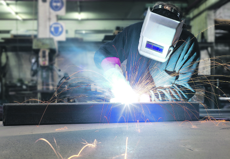

Srbija
Pre 2h 32minRHMZ IZDAO HITNO UPOZORENJE Naredna dva sata nas čeka haos, neka se pripreme stanovnici ovog dela Srbije!
I vodostaji će se kretati iznad granice redovne odbrane od poplava.
Republički hidrometeorološki zavod upozorio je žitelje Bačke i donjeg Podrinja da se u naredna dva sata na ovom području očekuju lokalni pljuskovi sa grmljavinom.
Ovo nije jedino upozorenje RHMZ-a, jer problem može da bude i sve veći vodostaj na rekama.
Vodostaj na Tamišu je u većem porastu sa tendencijom porasta naredna dva dana. Vodostaji će se kretati iznad granice redovne odbrane od poplava - stoji u upozorenu RHMZ.
Foto: Alo!/ Masanori JošidaOd katastrofe koja je našu zemlju zadesila 2014. godine, svakog maja Srbi sa oprezom gledaju u svoje reke, strahujući da bi ponovo mogle da se izliju u poplave domove, njive, pa i čitave gradove.
U majskim poplavama poginulo je 57 ljudi, od čega su se 23 utopile. Tokom poplava evakuisano 31.879 građana i bilo smešteno po prihvatnim centrima, od čega 25.000 samo iz Obrenovca, koji je bio i najteže pogođen.

Srbija
Pre 2h 32minNEKIMA PLATA I DO 100.000 DINARA! Ovo su najtraženija zanimanja u Kragujevcu, a radnika NEMA DOVOLJNO!
Među najtraženijim zanatskim zanimanja u Kragujevcu su bravar-zavarivač, stolar, šivač, tapetar i pekar-pica majstor.
Za većinu minimalna početnička plata na tržištu iznosi 30.000 dinara. Prema podacima Informatora "Zanat u rukama", na listi najtraženijih zanata su i monter suve gradnje, armirač, tesar i farbar-lakirer.
Mašinska industrija u Kragujevcu najviše potražuje bravare-zavarivače, koji su i najbolje plaćeni. Plata početnika u ovom zanimanju je 30.000 do 35.000, dok iskusni i vrsni zavarivači mogu dostići i zaradu od 100.000 dinara.
Minimalna početna plata za montere suve gradnje i šivače iznosi 25.000 dinara.
 Foto: Shutterstock"Ovo je lista zanimanja koje poslodavci traže, ali su, s druge strane i takva da osobe bez i sa najnižim kvalifikacijama mogu da se obuče i zaposle u relativno kratko vremenskom periodu", naveli su u Razvojnom biznis centru ( RBC).
Na evidenciji filijale NSZ u Kragujevcu od ukupnog broja nezaposlenih, oko 4.800 osoba je bez ikakve kvalifikacije (I stepen) ili sa niskim kvalifikacijama (II stepen).
Više od polovine su žene, a mladi od 15 do 30 godina čine oko 14 odsto.
"Brošura sadrži detaljan opis svih traženih zanatskih zanimanja. Koristiće ; karijernim savetnicima da informišu nezaposlene, organizatorima obuka u neformalnom obrazovanju, ali i stručnim saradnicima u osnovnim školama u procesu profesionalne orijentacije i informisanja učenika i njihovih roditelja", rekao je agenciji Beta Nemanja Jovičić iz Razvojnog biznis centar( RBC).
Informator je nastao u okviru projekta "Lokalna partnerstva za zapošljavanje ranjivih grupa" koji sprovodi Razvojni biznis centar (RBC) u partnerstvu sa gradom Kragujevcem i uz podršku Vlade Švajcarske.

Hrvatska
Pre 2h 32minDRAMA NA MORU KOD VISA: Posadu ribarskog broda spasavali helikopterom
Letačka posada Hrvatskog ratnog vazduhoplovstva (HRZ) i pripadnici Hrvatske gorske službe spasavanja učestvovali su u utorak popodnevne u akciji spasavanja člana posade s ribarskog broda kod ostrva Jabuke, oko 70 kilometara od Visa, a akcija je uspešno okončana i ribar je prevezen u KBC Split.
U jedinstvenoj akciji potrage i spasavanja, koja je trajala nepuna dva sata, a kako opisuje kapetan Davor Furčić, potvrđena je visoka spremnost i osposobljenost letačkih posada u najzahtevnijim uslovima spasavanja.
On je naveo da su kružili oko broda na visini od oko 20 metara i uspeli da izvuku ribara u korpi, a nakon njega i spasitelja, pa su krenuli prema Firulama.
"Zajedno sa spasiocima dali smo sve od sebe i na kraju kada vratimo celi film unazad najvažniji trenutak bio je kada smo živog čoveka predali u ruke lekara", rekao je kapetan Furčić, prenosi agencija.

Hrvatska
Pre 2h 32minUSTAŠKE PORUKE SRBIMA OSVANULE U CENTRU SPLITA: Nož, kolac, Jasenovac je samo jedan od grafita koji pozivaju na ubistvo! Ovo ludilo postaje svakodnevno!
U Splitu su na jednoj zgradi osvanuli ustaški grafiti, u kojima se poziva na ubijanje Srba.
U strogom centru, Splita na zidovima zgrada ispisano je : "SS", "Srbe na vrbe", "Nož, kolac, Jasenovac", "Srbosjek siče, četnik viče", uz neizostavno "klempavo U" s krstom, prenosi Index.hr.
Ulica u kojoj su se vandali iživljavali nalazi se na manje od sto metara od sedišta Torcide, kluba navijača splitskog fudbalskog kluba Hajduk.
Foto: ProfimediaPlaneta
Pre 2h 32minZMIJA SA TRI OKA ŠOKIRALA AUSTRALIJU: Stručnjaci kažu da je sve to normalno
Trooka zmija pronađena je na autoputu u severnoj Australiji a dobila je nadimak "Monti Pajton" zbog svog neobičnog izgleda.
Radi se o bebi tepih pitona koji je, nažalost, umro samo nekoliko nedelja što je pronađen u martu. Stručnjaci kažu da je treće oko zmije, na vrhu glave, izgledalo kao prirodna mutacija.
FOTO: EPA/NT PARKS AND WILDLIFERendžeri su ga otkrili blizu grada Hampti Du, 40 km jugoistočno od Darvina. Reptil dugačak 40 centimetara jako teško se hranio zbog svoje deformacije, rekli su zvaničnici.
FOTO: EPA/NT PARKS AND WILDLIFEServis za divlje životinje je rekao da su rendgenski snimci pokazali da zmija nema dve glave formirane zajedno. "Više je izgledalo je to jedna lobanja sa dodatnom šupljinom za oči i tri funkcionalna oka", objavili su oni Fejsbuku.
Stručnjak za zmije Brajan Fraj rekao je da su mutacije prirodni deo evolucije. "Svaka beba ima neku vrstu mutacije - ova je samo posebno gruba i izobličena", rekao je profesor Fri sa Univerziteta u Kvinslendu.
"Do sada nisam video zmiju sa tri oka, ali u našoj laboratoriji imamo dvoglavog tepih pitona a to je samo drugačija vrsta mutacije poput onoga koji vidimo kod sijamskih blizanaca", rekao je profesor.
- OVO JE MILO ILIĆ (31) KOJI JE LIKVIDIRAN U SAČEKUŠI U PODGORICI! Rat škaraljskog i kavačkog klana BUKTI i odnosi nove žrtve! Pre 37min
- UDARIO GA VIŠE OD 50 PUTA: Gren slem šampion tukao prijatelja naočigled ćerke i trudne žene, koja je doživela pobačaj! Čeka se reakcija NOVAKA ĐOKOVIĆA! Pre 37min
- VUČIĆ NAKON SASTANKA SA MOGERINIJEVOM: Ne želim da pravimo politički cirkus, mi želimo da očuvamo stabilnost i mir! Poručio sam joj da nema nastavka dijaloga bez ukidanja taksi Pre 37min
- UDARIO GA VIŠE OD 50 PUTA: Gren slem šampion tukao prijatelja naočigled ćerke i trudne žene, koja je doživela pobačaj! Čeka se reakcija NOVAKA ĐOKOVIĆA! Pre 37min
- VUČIĆ NAKON SASTANKA SA MOGERINIJEVOM: Ne želim da pravimo politički cirkus, mi želimo da očuvamo stabilnost i mir! Poručio sam joj da nema nastavka dijaloga bez ukidanja taksi Pre 43min
Preporučujemo
NEKIMA PLATA I DO 100.000 DINARA!
Ovo su najtraženija zanimanja u Kragujevcu, a radnika NEMA DOVOLJNO!
Prognoza
Kursna lista
 EUR 118.00 EUR 118.00 |
 USD 105.10 USD 105.10 |
 CHF 103.58 CHF 103.58 |
 GBP 136.63 GBP 136.63 |
 AUD 73.40 AUD 73.40 |
 BAM 60.33 BAM 60.33 |
 HRK 15.92 HRK 15.92 |
 CAD 78.00 CAD 78.00 |